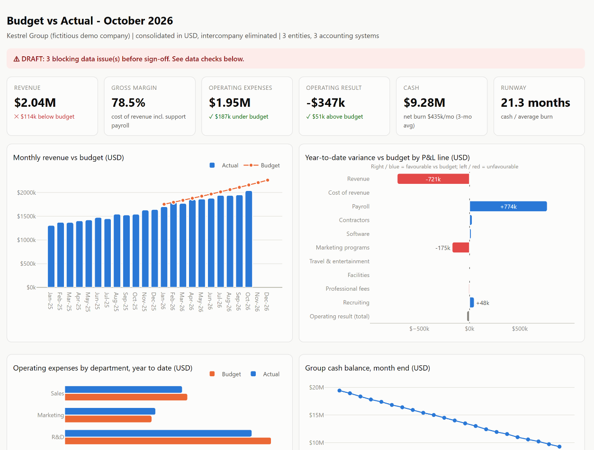

Budget vs actual dashboard: where the year is beating or missing the plan, in one page
Demo on fictitious data (dataset notes). The dashboard is generated by the same engine as the month-end pack.

The problem
The budget lives in an Excel workbook built by FP&A, in local currencies and with its own line labels. Actuals live in three accounting systems. Every month someone rebuilds the comparison by hand, and three questions keep getting fuzzy answers:
- Are we on budget, and which line, entity and department explains the gap?
- How much of the gap is FX, and how much is the business?
- How long is the runway at the current burn?
The solution
python -m findata.dashboard --period 2026-10
- One self-contained HTML page (
dashboard.html) that a CFO opens from an email or a link. Nothing to install, nothing to license. - KPI tiles: revenue, gross margin, opex, operating result, cash, burn and runway, each against budget in words ("USD 114k below budget"), not just in colour.
- Four charts:
- monthly revenue vs budget;
- year-to-date variance by P&L line (favourable to the right, unfavourable to the left);
- opex by department vs budget;
- cash balance.
- Variance commentary, P&L table and data checks on the same page, so nobody reads a number without knowing whether it is final.
- BI-ready tables in
dashboard_data/(budget_vs_actual.csv,pl_monthly_actuals.csv,cash_balance.csv). The same model can feed Looker Studio or Power BI when the client already uses one.
The result
| Before: typical manual process (estimate) | After: generated with the close (demo data) | |
|---|---|---|
| Monthly budget vs actual | about 1 day rebuilding pivots | regenerated in seconds with the close |
| FX vs operational variance | mixed together | budget restated at actual rates; FX effect shown separately |
| Departmental view | distorted by mis-tagged costs | untagged cost shown as "Unallocated" and flagged |
| Runway | separate spreadsheet | on the same page: 21.3 months at a 3-month average burn |
| Delivery | a file attachment | a link, plus tables ready for the client's BI tool |
What the October page shows at a glance: - Revenue is USD 114k (5.3%) below budget, driven by US subscriptions after a May churn. - Year to date, payroll is USD 774k under budget (hiring behind plan), which offsets most of the revenue miss. - Marketing is USD 175k over budget year to date, driven by an unbudgeted conference in June.
Design choices
- Diverging bars instead of a waterfall. With an operating loss of USD 4.5M year to date, a waterfall would shrink every variance to a sliver next to the totals. The diverging chart puts only the variances on the axis.
- Colourblind-safe palette. Actual in blue, budget in orange, favourable and unfavourable as a blue/red pair rather than green/red. Text labels carry the meaning, so colour is never the only cue.
- The tool is a detail. The engine computes every number and writes a ready table. Whether the client views it in this page, in Looker Studio or in Power BI changes only the last step.
Code: findata/dashboard.py